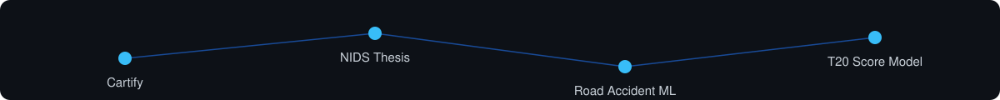
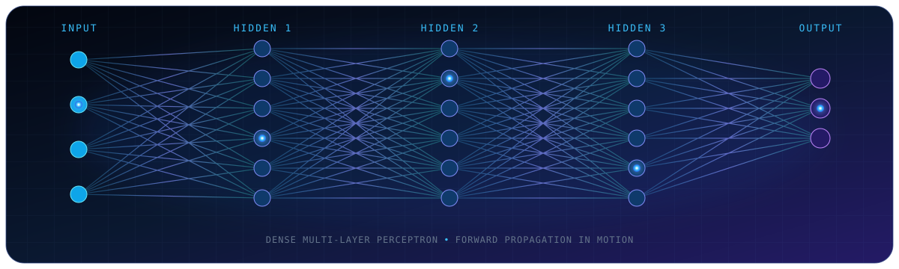

|
CARTIFY / FLAGSHIP BUILD FULL-STACK COMMERCE PLATFORM An immersive multi-vendor marketplace that pairs a glassmorphism storefront with a bold 3D experience - turning complex commerce flows into a polished, intuitive journey. Highlights - Multi-vendor commerce in one cohesive platform - Frontend, backend, and API integration Built with |
NIDS THESIS / RESEARCH TRACK ADAPTIVE INTRUSION DETECTION RESEARCH An adaptive intrusion-detection research track exploring how Artificial Immune Systems and Reinforcement Learning can work together to protect fog and IoT environments as threats evolve. Highlights - Adaptive learning for connected systems - Security research for fog and IoT networks Explores |
|
US ROAD ACCIDENT PREDICTION / DATA TRACK MACHINE LEARNING EXPLORATION A data-driven investigation of the US Accidents (2016-2023) dataset, transforming large-scale road and weather records into patterns that support smarter accident-risk prediction. Highlights - Real-world data analysis workflow - Prediction research with measurable patterns Built with |
T20 CRICKET SCORE PREDICTION / MODEL TRACK SPORTS ANALYTICS REGRESSION MODEL A focused sports-analytics model that turns match context into a projected T20 score, demonstrating how a simple regression pipeline can make structured predictions from game data. Highlights - Focused regression workflow - Data-driven sports analytics use case Built with |
|
⚡ Product Engineering |
🧠 Data & Intelligence |
|
☁️ Data, Cloud & DevOps |
🧰 Daily Workflow Designing reliable systems, one layer at a time. |

| 🧩 Competitive Programming Practicing structured problem solving. | 📚 Research Reading Exploring security and learning systems. | 🛠️ Side Projects Building useful technical experiments. | 🌱 Learning in Public Sharing the journey through projects. |
